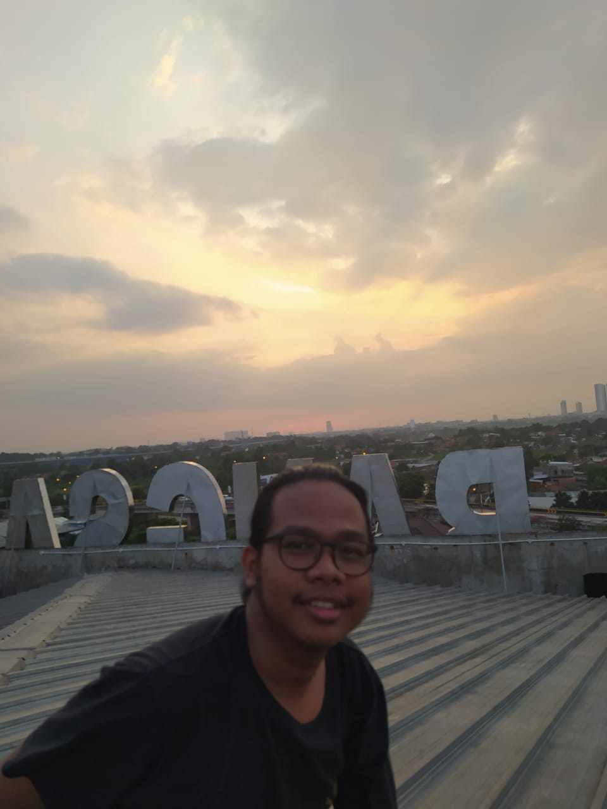

Singkat Perkenalan Tentang Diri Saya
Hai, saya Rafi Ikhsan perkenalkan saya adalah mahasiswa yang berkuliah di universitas pelita bangsa. Saya memiliki satu hobi yaitu berenang, dan hal yang paling saya sukai adalah menghayal. Saya bukan orang yang memiliki bakat spesial, yang saya sadari bakat saya adalah saya orang yang tidak mudah menyerah sebelum mencoba.
Saya lahir di bekasi tepatnya di bulak kapal, sekarang saya tinggal di Perumahan Kedungwaringin. Sebelum pindah ke kedung waringin, saya pernah tinggal di bulak kapal dengan nenek. Tapi setelah umur saya 3 tahun, saya dengan keluarga saya pindah ke Kedungwaringin tepatnya pada tahun 2002.
